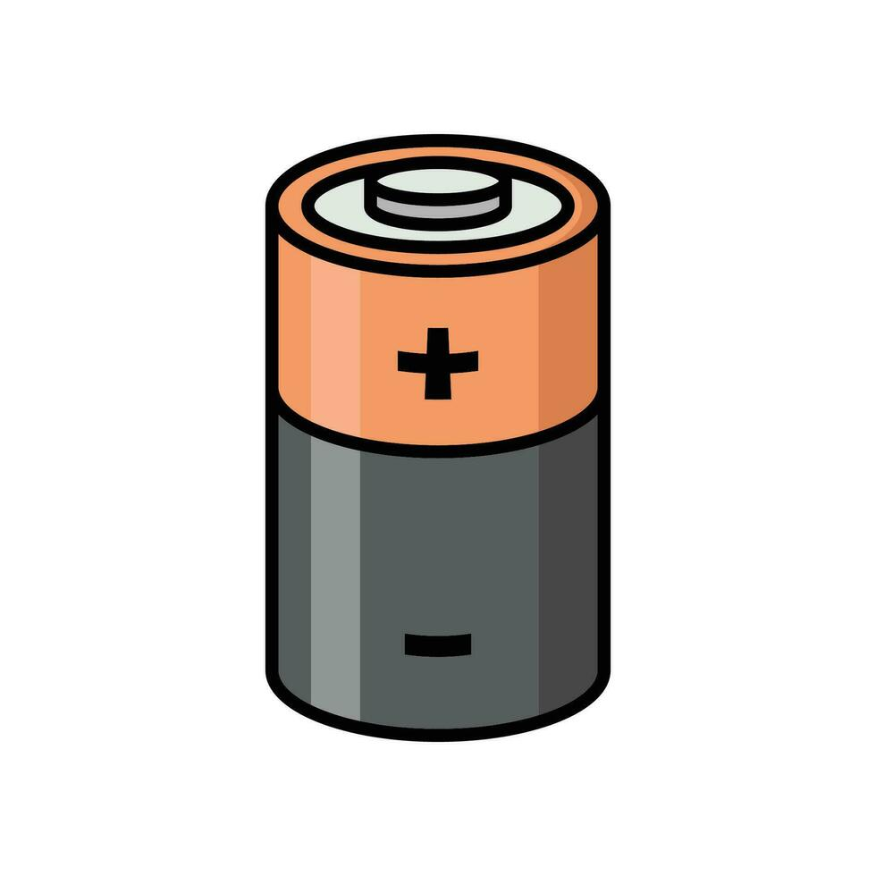

Packed with next-generation technology, our earbuds are engineered from the ground up to deliver crystal-clear sound, absolute water protection, and effortless control.
Certified to withstand depths of up to 10 feet underwater, allowing you to track laps, surf waves, or rock out in heavy rain without missing a beat.
Advanced acoustic sensors automatically detect when you submerge, dynamically boosting mid-range frequencies to keep your music punchy and intelligible underwater.
Our specialized acoustic baffles direct sound straight down your ear canal, cutting down audio bleed so only you enjoy your private playlist.
Experience zero-latency wireless transmission with extended range, ensuring a rock-solid connection whether your phone is poolside or in your locker.
Easily skip tracks, adjust volume, or switch audio modes with responsive wet-touch capacitive sensors that never slip or fail in the water.
Drop them into their compact, sealed magnetic case for just 15 minutes to get a full 3 hours of continuous playback power.
Need to talk to your coach or hear your surroundings? Switch modes instantly to blend external sounds smoothly into your listening experience.
Endurance Playback: Up to 36 hours of total battery life with the charging case for non-stop listening. Fast-charge technology gives you 3 hours of playback from a quick 15-minute charge.
Waterproof Rating: IPX8 certified for continuous submersion up to 3 meters, perfect for lap swimming, surfing, and heavy-duty workouts.
Connectivity: Bluetooth 5.4 with Ultra-Link technology ensures zero audio lag and a stable 50-foot wireless range.
Acoustics: Custom-tuned 10mm dynamic drivers with Adaptive Swim Mode and active directional sound isolation to prevent audio bleed.
Controls: Responsive wet-touch capacitive sensors for effortless playback, volume adjustments, and switching to Transparency Ambient Mode.
Ergonomics: Lightweight, one-piece sealed shell with secure-lock ear fins designed for ultimate comfort and stability during high-intensity routines.
Durability: Built with high-impact, corrosion-resistant polymers designed to withstand harsh pool chemicals, saltwater, and daily wear.
Portability: Ultra-compact magnetic charging case easily slips into any pocket, keeping your earbuds protected and fully powered on the go.